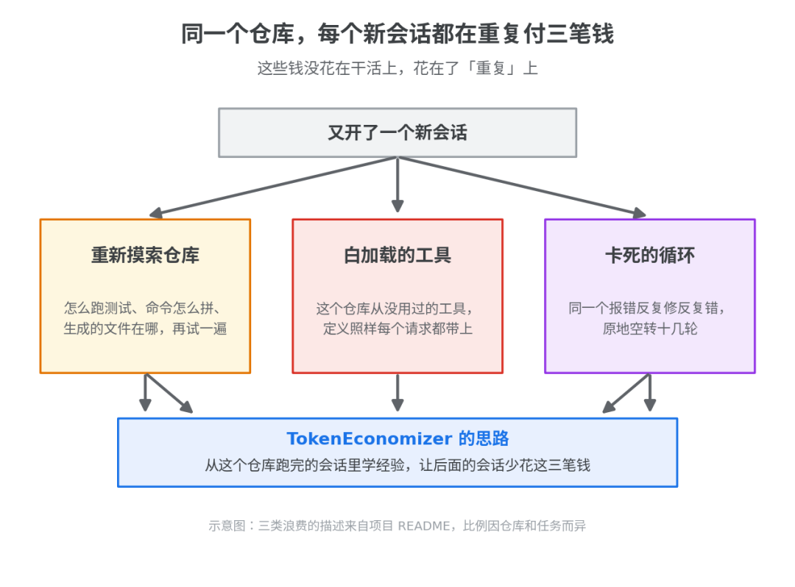
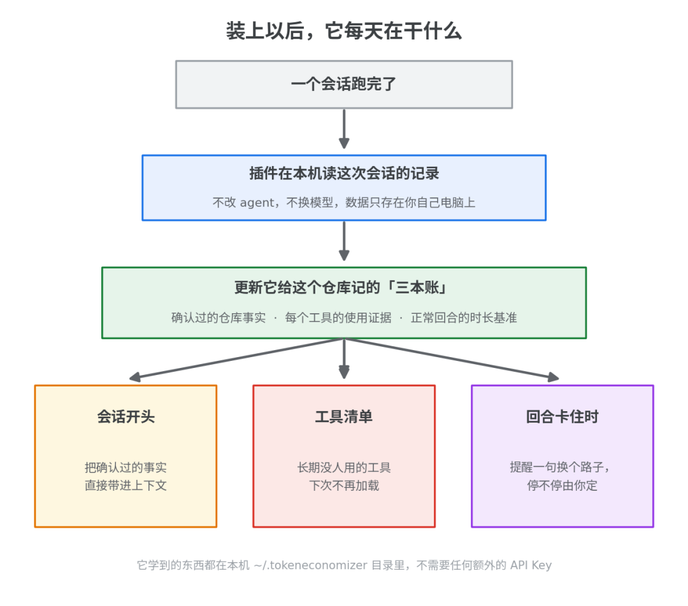
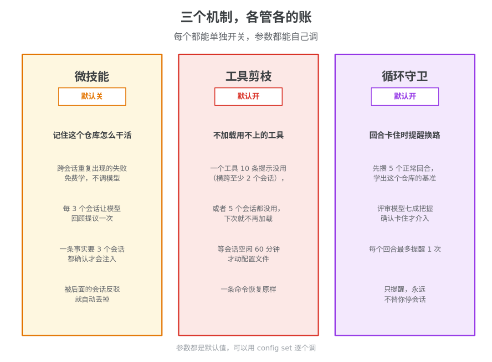
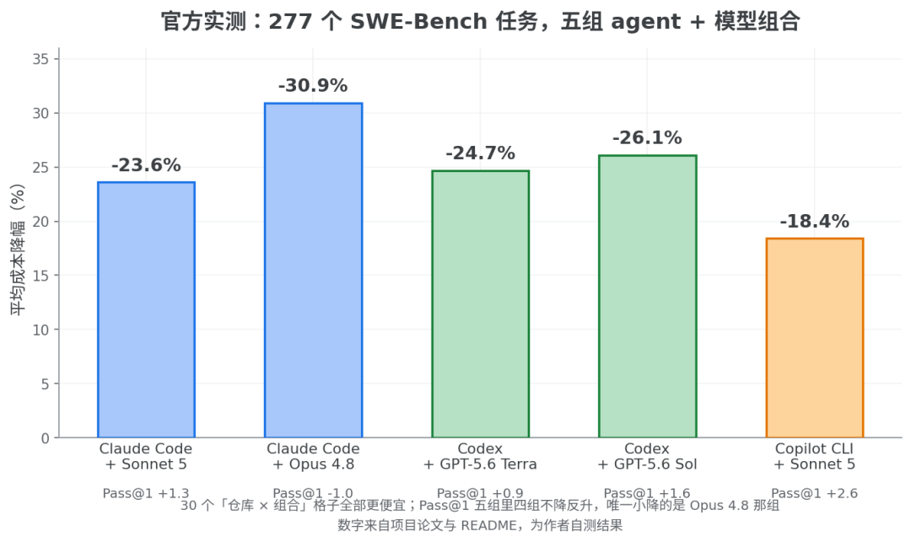
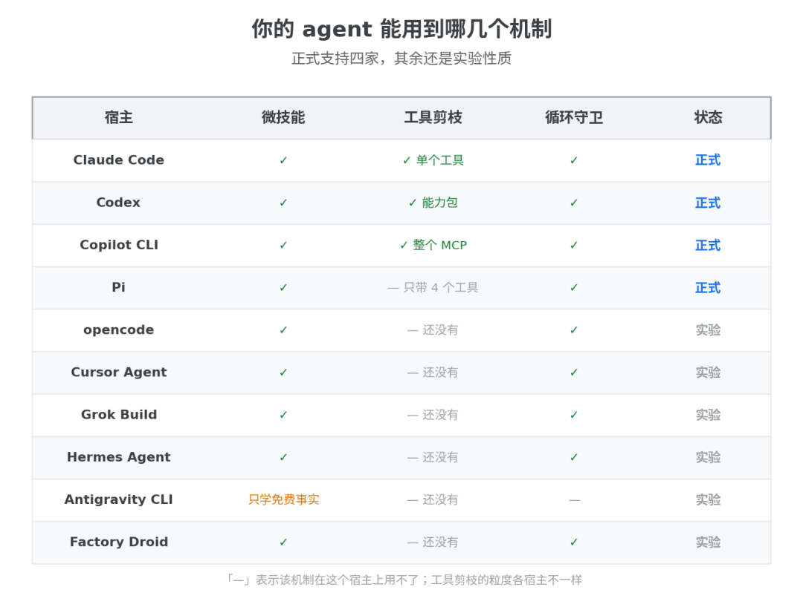

微软开源了个省钱插件：让 Claude Code、Codex 越用越省钱
查看微信原文 ↗
微软研究院、微软安全团队和 UC Berkeley 上个月开源了一个插件，叫 TokenEconomizer。我感觉还是挺实用的，让 Claude Code、Codex 这类编码 agent 在同一个仓库里越用越便宜，而且不改 agent 本身，不换模型。
官方测过：277 个 SWE-Bench 任务，五组 agent 加模型的组合，成本平均降了 18.4% 到 30.9%，30 个组合全部更便宜，任务成功率五组里四组不降反升，装完以后正常干活，不用额外做什么。
我把它的文档和论文翻了一遍，又把仓库 clone 下来跑了遍自带的测试，今天和大家聊聊这个插件。
先简单介绍下
它挂在编码 agent 上，只有一个目标：从这个仓库跑完的会话里学经验，让后面的会话少花钱。
它正式支持四家：Claude Code、Codex、GitHub Copilot CLI、Pi。opencode、Cursor Agent、Grok Build 这些还是实验性质。项目开源一个多月，GitHub 上已经拿到 8k Star，MIT 协议。主体是 Python，核心包只用标准库，一个第三方依赖都没有。
它省的主要是三类钱：

只要你在同一个仓库里反复开工，这三笔钱就会反复付，这是大量实践得出的结论。
它是怎么工作的
正常干活就行，它不需要额外任何操作。每个会话跑完，它在本机把这次的会话记录读一遍，更新它给这个仓库记的几本账。学到的东西全存在你自己电脑的 ~/.tokeneconomizer 目录里，不要额外的 API Key。它偶尔需要调模型的时候，走的也是你自己 agent 的登录和额度，但这部分极少。

有一点我翻文档的时候印象挺深：它给自己定的规矩是「每个动作都能反悔」。学到的事实，被后面的会话反驳了就自动丢掉。剪掉的工具也好办，一条命令就能还回来。回合卡住了它只提醒一句，停不停永远是你说了算。任何一步出错，你的会话照常跑，就当它不存在。
三个机制分别怎么省钱
省钱靠三个机制，每个都能单独开关、单独调参数：

微技能是记仓库事实的。
比如这个项目要用 python -m pytest 而不是 pytest，哪个命令得先设环境变量，生成的文件落在哪个目录。事实来源有两个：跨会话反复出现的失败，这部分不调模型，不花钱；再一个是每 3 个会话让模型回顾一遍最近的会话，提议新事实。一条事实要 3 个会话都确认过，才会在后面的会话开头注入进去。
另外，微技能默认是关着的，官方的说法很直白：
提议事实要多花模型调用，省不省得回来，取决于你的仓库和你干的活。想只用它不花钱的部分，可以开 envfacts 模式，只从重复失败里学，一次模型调用都没有。
工具剪枝管的是闲置工具。
一个工具连续 10 条提示没被用过，这 10 条还得横跨至少 2 个会话，或者干脆 5 个会话没碰过，下次会话它就不加载了。写入时机也挑过：等你的会话空闲 60 分钟再动配置文件，免得旧会话恢复的时候缓存整个废掉。你自己手写的排除规则它不碰，想恢复也只要一句 toolprune restore。
循环守卫管的是卡死。
它先在这个仓库攒 5 个正常收尾的回合，学出「这个仓库的正常回合大概多长」。之后哪个回合出现重复失败、报错扎堆，就交给一个评审模型判断是不是真卡住了，七成以上把握才出手，往上下文里塞一句「换个思路试试」，每个回合最多提醒一次。还卡着，它就告诉你怎么手动停，它自己不动手。
评审模型默认挑你套餐里最便宜够用的那个，Claude Code 上是 haiku。这部分花了多少，它的报告里也如实记着。
官方的实测数字怎么看
展开说说这组数字：277 个 SWE-Bench 任务、6 个仓库、5 组 agent 加模型的组合，30 个「仓库乘组合」的格子全部更便宜，没有一个例外。
任务成功率里唯一小降的是 Claude Code 配 Opus 4.8 那组，Pass@1 降了 1 个点，官方也原样写出来了。

数字是好看，但我翻完文档，感觉有几处要说一下。
这些全是官方自测，目前还没有第三方独立复现过。官方文档里自己也写明：插件的干预方式跟实验里不一样。实验里回合卡住是直接掐掉重来，插件里只是提醒你一句，所以实验里的效果不能直接算到你装的插件头上。
还有，微技能在实验里开着、效果算进了那 18% 到 31% 里，但插件默认关。官方还承认，实验环境一旦搭好，免费那层几乎学不到什么事实。所以你装上以后，实际能省的多半没这么多，得在自己的仓库里跑一阵才知道。
怎么安装，要注意什么
前提是你已经在用 Claude Code、Codex、Copilot CLI、Pi 里的一个，机器上有 Python 3.10 或更新的版本。以 Claude Code 为例，README 给的装法是三条命令：
git clone <https://github.com/microsoft/TokenEconomizer.git>
claude plugin marketplace add "$PWD/TokenEconomizer"
claude plugin install tokeneconomizer@tokeneconomizerclone 下来的目录别删，插件就跑在这个目录里。然后启动 claude，信任这个文件夹，敲一句 /tokeneconomizer:status，能看到状态块而不是报错，就成了。每台机器再补跑一次：
/tokeneconomizer:toolprune refresh-catalog这句是把会话加载过的工具清单记录下来。不跑的话，剪枝只能看见很少一部分工具，Claude Code 大版本更新之后也要再跑一次。
其他几家命令几乎一个样，就是敲法不同：Codex 里是 $tokeneconomizer:status，Pi 里是 /te status。opencode 那几个实验性宿主没有插件命令，得在终端里跑 te。
这里有一点要注意：
它对宿主版本卡得比较死。README 里列了验证过的版本区间，Claude Code 是 2.1.300 到 2.1.329，Codex 是 0.153.1 到 0.171.0，区间外的都写着「没测过」。Codex 0.141.0 之前干脆不跑插件钩子，装了也白装，装之前建议对一眼自己的版本。
各家能用到哪些机制也不一样，我整理成了一张图：

我的看法
我本地把它自带的离线测试跑了一遍，1398 个通过，44 个跳过，19 秒跑完，整个包零依赖，只用 Python 标准库。这个测试量放在一个开源一个多月的项目上，算很扎实了，不过也不奇怪，微软这种级别大厂出的，内部肯定已经磨合过了。
我感觉长期在同一批仓库里用编码 agent 的人和团队，还是值得试试的。它的价值全部来自重复，仓库用得越久，它攒的经验越多，省得越多。反过来，一次性任务、每次换新仓库的活，那这个毫无意义，甚至还会花费更多。官方在两个「每个任务都是新仓库」的安全审计基准上只测出 6% 到 20%，也是这个原因。
循环守卫这块，我建议装上以后自己观察一阵再下结论。官方文档里提过，纯按规则判断的版本会把「已经找到原因、正在绕行」的回合误判成卡住，所以正式版才加了评审模型把关。这么改是对的，不过误伤的可能还是有。
30.9% 我倒没那么在意，我更看重它的路子：不换模型，也不改 agent，只在仓库这个层面攒经验压成本。以后模型升级、agent 换代，这些经验还在。这也算给给我们的 agent 积攒内部经验，从这方面思考的话，省是必然的，无非是省多少的问题。
开源仓库：microsoft/TokenEconomizer
这个公众号长期分享实用开源项目。如果你不想逐篇翻阅历史文章，可以直接关注微信公众号“AI开源无界”，通过后台留言与我们互动交流。